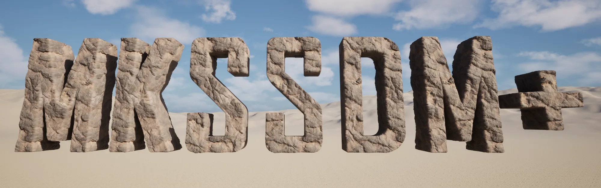
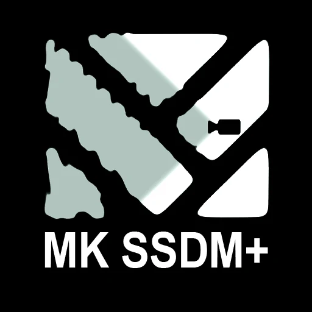
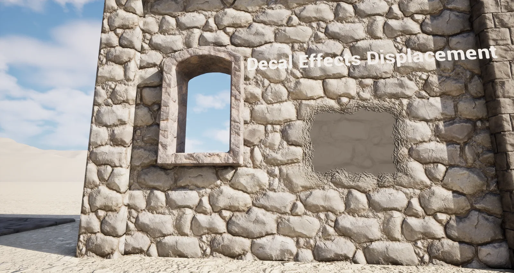
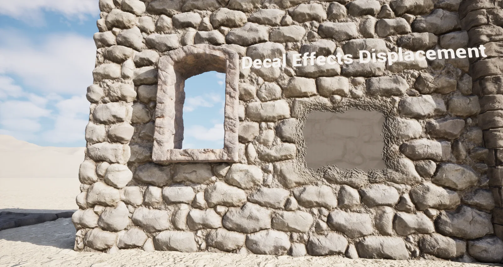

MK SSDM+


Unreal Engine plugin · Screen spaceScreen space displacement and contact shadows that finally agree with each other.
NANITENot supported. SSDM+ works on regular, non-Nanite meshes and landscapes.
Drag to compare
Left is the stone wall with normal mapping only. Right adds SSDM+ displacement and contact shadows, including a decal that writes its own height.


SSDM+ OFFSSDM+ ONLots of depth, little cost
Add one node to a material and it displaces. Everything below ships in v0.1.
Use one or both
Pick a mode in Project Settings. Tune everything else in the MK SSDM Plus Settings panel, or with one quality preset from Low to Epic.
SSDM only
Screen space displacement from the height buffer, with your existing shadow setup.
Contact shadows only
Height-aware contact shadows without displacement. Fixes self-shadowing on surfaces using pixel depth offset.
Both
Displacement and shadows read the same buffer, so the shadows always match the displaced surface.
One height buffer
Materials write height through a custom output. A custom mesh pass fills the buffer using the main view's existing culling, so there's no second scene traversal. Both effects read from it.
The numbers
Measured with stat gpu; each pass shows under its own MKSSDM label. Dashed values are placeholders.
GPU cost
Medium preset · test scene TBD| Pass | 1080p | 1440p | 4K |
|---|---|---|---|
| MKSSDM Height | — ms | — ms | — ms |
| MKSSDM Smooth + Scatter | — ms | — ms | — ms |
| MKSSDM Resolve | — ms | — ms | — ms |
| Contact shadows | — ms | — ms | — ms |
Specs
What you get| Engine | UE 5.8 |
|---|---|
| Platform | Windows (Win64) |
| Version | 0.1 |
| Type | C++ code plugin |
| Modules | MKSSDMPlus, MKSSDMPlusMeshPass, MKSSDMPlusEditor |
| Engine changes | None |
| Nanite | Not supported |
| Settings | Project Settings, settings panel, console variables |
| Quality presets | Low, Medium, High, Epic |
| TAA / TSR | Writes displaced depth and velocity |
| Includes | Demo map with RVT landscape |
| Author | Michael Kinsey |
FAQ
Full setup lives in the docs: quick start, settings reference, troubleshooting and licence. Read the docs →
Does it support Nanite?
No. SSDM+ does not support Nanite meshes or Nanite landscapes. Use it on regular, non-Nanite geometry.
Do I need a source build of the engine?
Draft: confirm before launch. The plugin makes no engine source changes.
Does it work on RVT landscapes?
Yes. Contact shadows read height written into the RVT, where stock contact shadows lose pixel depth offset.
Which engine versions are supported?
UE 5.8 on Windows at launch.